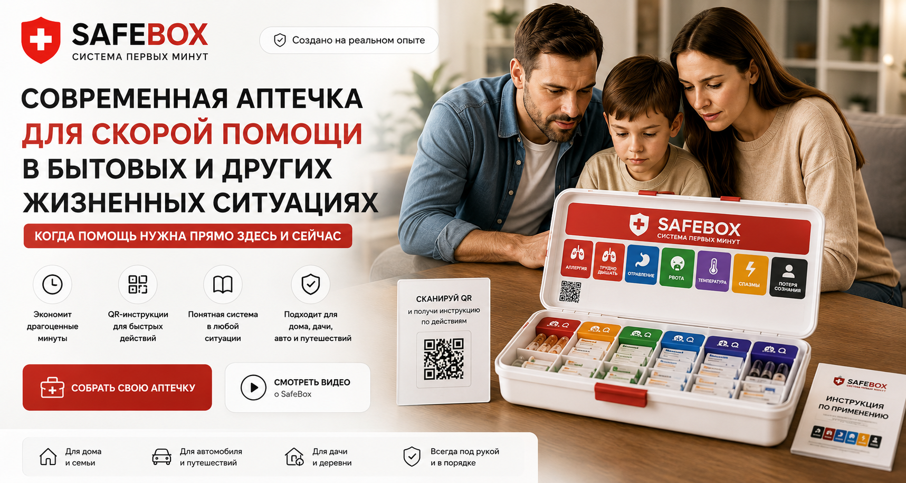

Personal founder stories are separate from product reviews. Verified customer feedback will be published after testing, with permission.
Another story from our familyAt night. At home. Suddenly.
“Dad, I can’t breathe.”
Words you never forget.
The founder’s personal experience
What if we had nothing at home?
“One night, my son suddenly started coughing, without stopping. Then he said: ‘Dad, I can’t breathe.’ He was coughing so hard it felt as though he would cough his lungs out.
Luckily, we already had a nebuliser and Pulmicort at home. We had bought them three years earlier on a doctor’s advice. What if we hadn’t?”
The founder describes this as an episode of croup. It is another reason behind SAFEBOX: discuss the supplies your family may need with a doctor in advance, know where they are, and keep individual instructions close by.
01 / An honest beginning
I never planned to build a first-aid kit. Until my wife needed one.
The personal experience behind SAFEBOX.
3minutes
According to the founder, his wife’s condition deteriorated within just a few minutes.

Project illustration, not a photograph of the incident.
“My wife became unwell right in my arms. Her limbs and mouth cramped, she had spasms, and breathing became difficult. It all happened in about three minutes.”
“I associated it with severe dehydration. We had Zyrtec at home; I gave it to her, and she felt better afterwards. That is how I experienced and remember that moment.”
That experience made me realise how important it is to have the right supplies within reach. But putting medicines in a box is not enough. You need to know where everything is, read the labels, and find the information you need.
Even after that incident, I did not immediately organise our home medicine kit. The danger passes, and you put it off again.
That is how SAFEBOX began: organised storage, visible sections, large labels, a guide and a QR entry point. A system that the whole family can understand.
We do not publish invented testimonials or claim that these stories establish product effectiveness.